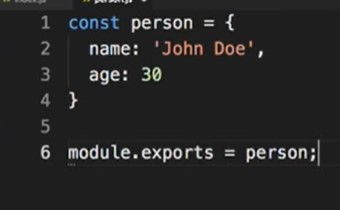
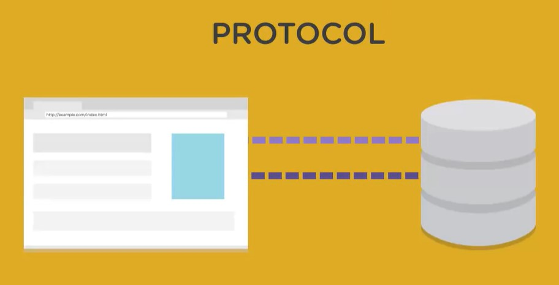

Differences Between JavaScript & Node.js
Download Node JS
Wallmart case study on how NodeJS helped
Paypal case study with NodeJS
Node JS has a common data type called buffer
Local IP address assigned to all computer is 127.0.0.1
Below is enough to get a basic http server working in node js

What is a Node JS?
- Node Js is a runtime and not a framework like express - it is not a LANGUAGE, essentially allowing you to run Javascript code on the server side

- Node JS is JS in the server side. Good for real time applications sending lots of information simultaneously
- cloud9 is a cloud web app that enables you to construct all your code in the web and keep it safe where ever you are
- The best projects for Node JS

- When installing NodeJS you also get npm which is called Node Package Manager.
NPM is used to install thirdparty packages or modules such as frameworks, libaries and tools

- When you install a package it gets stored in a folder called node_modules. Also dependancies that are required for what you have installed will be listed in the package.json file.
- When installing something using npm if you place the -g after install it will install it across you system not just you application.

- Modules are a big part of node, node comes with lots of core modules
You can also have modules that you install with npm.
You can also create your own modules which are files that have a export. Allowing you to include variables and function from one file in another
- To link a core or custom module it is done as below. Path being the core module and myFile being the custom module
- node has a repl allowing you to directly write javascript into you command line.
- See the NPM page for more info on packge.json and other npm related items
- Start out with a .js file normally index.js is used but you can name it what ever you want. Create a console.log and print that using the terminal - node FILENAME
The environment I am using is VS code with the internal terminal
- Normally you are going to have multiple files and these other files are basically modules. These other files could be classes, functions and other JS performing particular actions
- Example of a JS file that has a object in that can be used in our index.js file through using a module.export

- To connect the other file which is now a module you place it in a variable normally a const. Example const person = require('./person');
This is actually a core module called path module in node js
- The core Nodejs modules can be found HERE, with documentation
- Core modules dont have to be installed through npm just have to be assigned to a variable. Example - const path = require('path');
- Some examples of the path module, methods from the path module being used. __filename is the current file

- Below example is were you can create a new folder in the current directory, while also capturing any errors

- The below code will create a file in the specified directory and write to it Hello world. This process overrides anything in the file

- You can apend to that exisiting file using fs.appendFile
- You can read the data in a file but you have to ensure you specify, path, folder, file name, data type and use two parameters for the function error and data

- Above are just some methods you can do with the FS module in Node JS. The ability to convert the Node JS into action is import
- Another example of a core Node Js module is the OS module - giveing you information on your operating system

- Another example is the URL module - The url module provides utilities for URL resolution and parsing. Below .host gets the port name as well

Using Eventsin Node Js
Much of the Node.js core API is built around an idiomatic asynchronous event-driven architecture in which certain kinds of objects (called "emitters") emit named events that cause Function objects ("listeners") to be called.
- Example of a event module -

Creating a server using the HTTP module in Node Js
Below we will be creating a basic web server using the HTTP module
- Example of a Http server running sending a message to the browser saying Hello World on port 5000 - The most simple way to do this, a better server we can load html and css.


To stop the server from running do a control C
- Working with makes setting up a server and working with nodeJS a lot easier
Creating a server using the HTTP module in Node Js
Below we will be creating a more advanced web server using the HTTP module, enabling us to pull in css files also.
Summary of the using Node JS
Bring toghether all what we have learnt above to create a server to run html and css and javascript
- See the file index.js. This is a example of loading a file with attached css
- If the above example was like a rest api we would be serving json instead of html

- To have a basic HTTP server to open up one plain HTML page here is an example
- JS gives you access to the window objects in the browser that lets you see all the prebuilt JS methods and stores all your variables.
NodeJS has something similar called global. This shows some of the same methods and some different
- Creating a Hello world with NodeJS - NodeJS requires a installation and runs in the command line
- In the temrinal start with node -v which should return with the version of node JS you have. Nodejs is backward compatible

- To run a JS file in Node JS in the terminal ensure your are in the location of the file which has the JS extention. - cd FILEPATH
Simply just type in the command line type node FILENAME and hit enter
- To clear the console just type clear and hit enter

- node JS lets you type JS in the terminal just type node in the terminal and you will see just > on the left, meaning that you can now write JS in the terminal
consloe.log(Logs information) consloe.error(Logs a error) consloe.dir(Prints information from a JS object)

- Use control d to exit out of the repel
- Host objects cannot be ran in nodeJS/Terminal as they are only for the host but native objects can be like string, array, number and so on


- Node.JS has its own host objects and below are just some

Why use Node JS?
Building a command line application

- Application
- You can use call back functions to handle events. Two types of events - User events and System Event
- User Event

- System Event

Another system event is the ready state change of a Ajax request - The different stages of the request trigger the handler

- System eventsin Node.JS

- The Bufferclass was introduced as part of the Node.js API to make it possible to manipulate or interact with streams of binary data.
When something is sent over the internet it is sent in packets not in one go. In Nodejs you will see multiple streams in buffers as it is non blocking.
- To convert a buffer to a string use the .toString()

- In Nodejs you will get a data event and once completed you will get a end event
- The global object we can access the current version of node and arguments passed in to the command line is process
- The command line arguments can be accessed through the property argv on the `process` object
Handling Errors in NodeJs
- NodeJs Errors The 'error' event is emitted if an error occurred while writing or piping data. The listener callback is passed a single Error argument when called.
The stream is closed when the 'error' event is emitted unless the autoDestroy option was set to false when creating the stream.
After 'error', no further events other than 'close' should be emitted (including 'error' events).

- The above catches a error once the api has been ran. If the API cant even run for some reason we need to catch that with try...catch
- The two common error types, exceptions and admitted events
- Below is shown how you can catch a error while the string from the json is being parsed


- You can use a if statement to catch anything that is not a status code 200. You can also import the http module from nodejs which will cover the error code to soemthing meaningful

- module.exports is a object created by the Module system.
The code for the module export is module.exports.get = get;. .get is the function that is being called
Creating a command line weather Application
Building a Simple Dynamic Website Using Node Js
- I will be building a Node Js website that will be placed on my website Inspired Solutions SHowing a live status of my Tree ouse Profile
- How a website Operates:
- A browser is a used to render HTML, CSS and client side Javascript
- When you search for a website a request is made to a server (hosting server) searching with a URL. This URL will be a path to a file like a HTML file
- The software on the server like Apcahe of engine x will look for the HTML file requested when the URL is searched and send the HTML file to the browser

- The protocol used is HTTP

- On a dynamic site which might contain PHP we would need a php interpreter

- With Node JS you can build you own HTTP server, this server can deal with dynamic files and send back basic HTML files also to the browser

- We can use the 4 P's to problem solving when dealing with this task

- When the end response is ran to more responses can be ran.
- More info on reponse.write and request.url